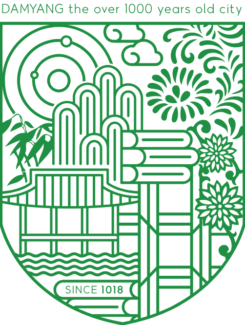

담양군
자연과 전통이 살아 숨쉬는 전라남도의 도시

담양군의 상징 이미지

담양군의 마스코트
담양군의 슬로건
담양은 어떤 곳인가요?
담양군은 전라남도의 북부에 위치한 도시로, 아름다운 대나무 숲과 전통 정원으로 유명합니다. 죽녹원, 소쇄원, 관방제림 등 자연과 역사가 조화를 이루는 관광 명소가 많으며, 슬로시티로 지정된 전통 문화의 고장이기도 합니다.
담양에서 가볼만한 곳
- 죽녹원
- 소쇄원
- 관방제림
담양에서 꼭 먹어야 하는 것
- 담양 떡갈비
- 대나무 잎 차
- 죽순 요리